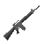

HOME ⊹ TEST ⊹ TWITTER ⊹ CA HERE
NEWS
7.22.25
> Coinity Test #12 initiated – 3% chance of passing
7.21.25
> Phase II protocols uploaded – 12% pass likelihood
7.20.25
> First user simulation – result: FAIL (1%)
7.18.25
> Coinity shell interface deployed
7.16.25
> Mentality module activated – recalibrating biases
7.14.25
> Reality fracture detected – chance of success drops
7.10.25
> Initial upload complete – welcome to Coinity
2.png)
You are now part of the test.
This is not a game.
Each visitor affects the outcome.
Chances of passing: fluctuating.
Observe the logs.
Interpret the signs.
Fail with grace, or succeed by accident.
BUY BACK
